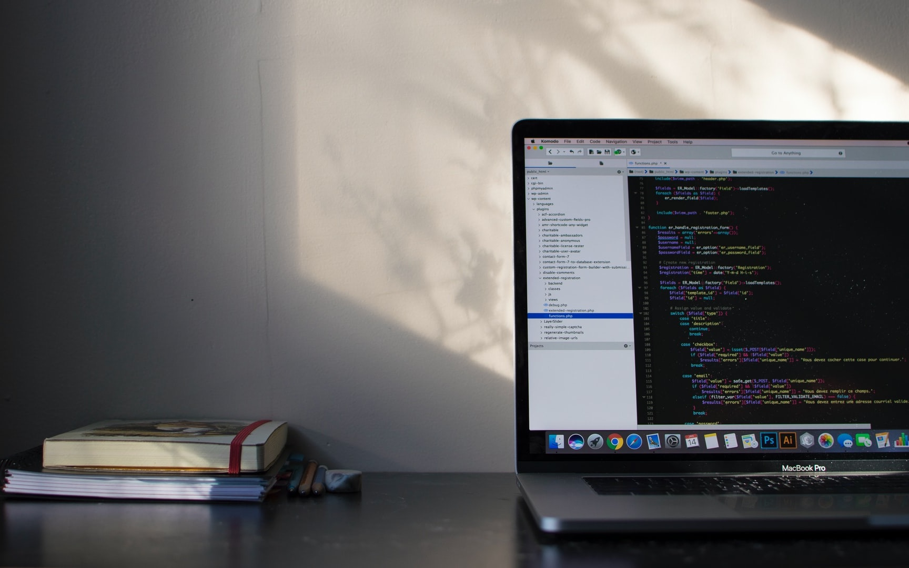

Лекция 6. Тестирование
Промышленное программирование @ МФТИ, 2020-2021
Заходит однажды тестировщик в бар. Забегает в бар. Пролезает в бар. Танцуя, проникает в бар. Крадется в бар. Врывается в бар. Прыгает в бар
и заказывает:
кружку пива, 2 кружки пива, 0 кружек пива, 999999999 кружек пива, ящерицу в стакане, –1 кружку пива, qwertyuip кружек пива.